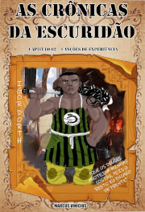

Saudações
Olá, eu sou o Guilherme, um dos fundadores da RPGrafic Comics, estou aqui para falar um pouco sobre ela.
Bom! A RPGrafic Comics tem a finalidade de ajudar você, que têm dificuldade em onde colocar suas HQs (História em Quadrinhos) no ar. Você pode hospedar suas HQs aqui, enviando via E-mail / G-mail para nós.
Ajudamos você também a fazer sua história. Logo abaixo, veja o que podemos fazer por você:
Características:
- Hospedamos (HQ);
- Ajudamos no roteiro;
- Desenhamos/Pintamos;
- Scaneamos o desenho;
Caso você queira que utilizamos umas dessas caracteríscas, chame-nos pelo E-mail / G-mail, para podermos dar mais informações.
Caso você escolha a opção de desenhar/colorir, um dos fundadores da RPGrafic Marcus Vinícius fará isso por você, e se preferir Eu e Charles Gonçalves (também um dos fundadores) ajudaremos você a fazer o roteiro de suas HQs.
A RPGrafic possui 2 HQs a "Horizon" e "As Crônicas da Escuridão", elas foram feitas por nós mesmos, assim, você poderá ver nosso desenvolvimento. Confira as 3 artes feitas por Marcus Vinícios.
